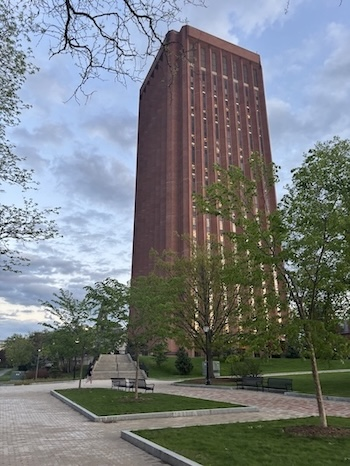

Technical & Professional Writer
English & Information Technology student passionate about the intersection of language and technology — from brand strategy to content design.

Technical Skills
Professional Skills

Photo taken by Jenna Marino
A Little About Me
I am a rising senior at the University of Massachusetts Amherst, graduating in December of 2026. I am pursuing a bachelor's degree in English alongside a certificate in Professional Writing & Technical Communication and an Information Technology minor. I am currently working as an IT student ambassador, providing feedback on campus technology and attending tabling events. I am the treasurer of the UMass Synchronized Skating team where I handle team dues, budgets, and travel accomodations. Next semester, I will be interning with the UMass Press team as a marketing operations intern. I am excited to use these experiences to enhance any content marketing or technical writing team!
Outside of school, I like to skate, read, and play pickleball. I often spend my free time at the gym or calling my family.